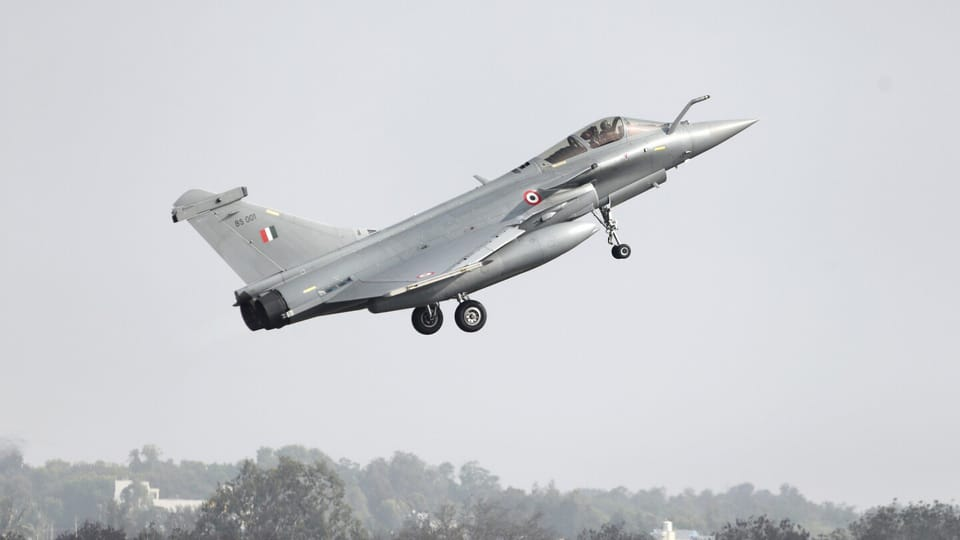

世界苦茶07月07日新闻 | 25条 | 中国限制采购欧盟医疗器械

中国限制采购欧盟医疗器械 | 郑州一公园发生恐同暴力袭击 | 贝森特将贸易谈判截止时间设置为8月1日 | 7月中国零售业景气下降 | Xbox裁员鼓励员工向AI求助
今日三条新闻分析
苦茶数据
美元兑人民币：7.16（昨日7.16，前日7.16）
美元兑日元：144.32（昨日144.51，前日144.71）
上证指数：3463（昨日3472，前日3458）
标普500指数：休市（昨日6279，前日6227）
比特币：109046（昨日108097，前日108241）
布伦特原油：67.72（昨日68.30，前日68.60）
中国新闻
• 中方限制欧盟医疗器械采购 ：中国官方星期天发布限制欧盟医疗器械进口的通知，当中要求采购人采购预算金额4500万元人民币以上的医疗器械时，应当排除欧盟企业参与，但当中不包括在华欧资企业。据人民日报客户端星期天报道，根据有关法律法规，经批准，中国财政部决定在政府采购活动中对部分自欧盟进口的医疗器械采取相关措施。中国财政部称，采购人采购预算金额4500万元人民币以上的医疗器械时，确需采购进口产品的，在履行法定程序后，应当排除欧盟企业参与。不过，这并不包括在华欧资企业。 （翻评：中欧贸易战开打。）
• 郑州公园发生恐同暴力事件： 2025年7月6日，一组微信聊天记录在网络流传，视频于2025年7月6日下午至晚间开始在微信流传，有微博网友猜测地点为郑州人民公园内，据称该区域是当地性少数群体的聚集地之一。视频显示：一群社会青年持械围殴公园内的性少数群体，并高喊“你是不是1？”“是不是来找男人？”等具有性取向歧视的侮辱性语言。受害者被追赶、拳打脚踢，部分施暴者使用器具攻击，视频显示有受害者惊恐逃跑但仍被围堵。
• 中消协提醒青年理性消费 ：中国消费者协会指出，近期，部分青年消费者大额借贷现象增多，并对此予以郑重提示。中消协星期五在微信公众号发表了一则贴文，提示青年消费者应理性消费，远离网贷陷阱。该贴文称，近期，部分青年消费者盲目超前消费、大额借贷现象增多，因超出自身还款能力而陷入债务困境，甚至影响个人信用记录，对未来发展和生活造成严重负面影响。
• 郴州船只侧翻29人落水 ：中国湖南省郴州市星期六发生船只侧翻事件，船上29人落水。据“郴州发布”微信公众号消息，星期六下午4时30分许，一船只在湖南郴州资兴市白廊镇东江湖水域突遇11级大风，造成侧翻。消防救援人员在现场开展人员搜救工作。据初步了解，该船只核载40人，实载29人，事发时全员落水。截至当天下午6时许，已有28人获救，其中27人无生命危险，一人正在抢救。另有一人正在搜救。
• 渤海将进行实弹射击训练 ：中国星期一至星期三将在渤海莱州港水域进行实弹射击训练。据中国海事局网站消息，烟台海事局星期五发布航行警告，7月7日0时至9日24时，渤海莱州港相关水域内进行实弹射击训练。训练期间，其他船只禁止驶入。
• 驻南非使馆提醒女性安全 ：中国驻南非大使馆发文称，6月以来，南非多地连续发生多起针对女性中国公民的绑架案，并呼吁女性中国公民尽量避免独自外出。中国驻南非大使馆星期天在官方微信公众号发文说，进入6月以来，南非多地特别是豪登、东开普两省连续发生多起针对女性中国公民的绑架案。绑匪选择周末时段，在中国侨胞通勤期间、关闭店铺后作案。“相关案件严重威胁侨胞的人身、财产安全。”中国驻南非大使馆呼吁，女性中国公民尽量避免独自外出，以及使用定位器、一键报警或打开手机远程定位并留下定位账号密码，失踪后方便警方及时开展搜寻。
亚太印太新闻
• 韩特检申请逮捕尹锡悦 ：据韩联社星期天报道，负责调查紧急戒严事件的特检组当天提请法院对前总统尹锡悦签发逮捕令。特检组说，已向首尔中央地方法院申请签发逮捕令，尹锡悦涉嫌妨碍执行特殊公务、违反《总统警卫法》、滥用职权、伪造公文等。据报，尹锡悦指示军方无人机作战司令部派无人机侵入朝鲜首都平壤，从而为宣布戒严制造理由的外患罪嫌疑尚未列入逮捕令。特检组说，尹锡悦的外患罪嫌疑仍在调查中。
• 韩美关键期加强磋商 ：在韩美关税冻结协议即将到期之际，韩国总统国家安保室顾问魏圣洛于星期天前往华盛顿，与美方就贸易与防务问题展开磋商。此行亦被视为韩方在关键阶段加强外交沟通的最新举措。路透社报道，魏圣洛是总统李在明的国家安保顾问，此行计划与美国国务卿鲁比奥会晤。他说：“磋商已进入关键阶段，因此我方也将加大参与力度。”尽管他未进一步透露细节，但预料将涉及关税、军费分摊及高层互动等多项议题。尽管美国总统特朗普多次指出，韩美防务经费分摊将纳入所谓“一站式”谈判中，韩国方面则坚持认为，安保与贸易应为两个独立议题。
• 台风丹娜丝增强并发警报 ：台湾交通部中央气象署7月6日上午发布警报，称丹娜丝台风已增强为中度台风，并将陆地警报范围扩大至新北以南、宜花东及澎湖等地。据台湾气象署官网消息，第四号台风丹娜丝目前在澎湖南南西方海面200多公里处，正向东北转北北东移动。气象署5日上午发布海上警报后，当晚又发布陆上警报，警戒范围截至6日上午8时扩大为新北以南、宜花东及澎湖等地。
• 台将首次参加长崎仪式 ：日本长崎市市长铃木史朗说，同意台湾出席下个月举行的和平祈念仪式。若台湾出席，将是台湾首次参与该活动。据日本共同社报道，铃木史朗星期六回答媒体采访时说，对于台湾希望出席8月9日“核爆日”举办的和平祈念仪式，他已经答复称“可以出席”。铃木史朗没有透露答复的时间与台湾方面的反应。铃木史朗6月曾称台湾已表示有意参加仪式，正在讨论如何因应。
• 日本拟向菲出口旧舰 ：日本媒体报道指出，日本将向菲律宾出口一批服役超过30年的海军驱逐舰，以加强菲律宾对中国的海上威慑力。路透社引述《读卖新闻》星期天报道，多名政府消息人士透露，日本计划向菲律宾出口六艘已在日本海上自卫队服役30多年的阿武隈级护航驱逐舰。报道说，日本防长中谷元与菲律宾防长特奥多罗6月在新加坡会晤时，就这批护卫舰出口达成一致。菲军方将于今年夏天对这些舰艇进行检查，以作最后准备。
科技新闻
• Xbox裁员鼓励向AI求助 ：微软本周宣布的大规模裁员对其游戏工作室的影响尤其严重，但一位Xbox高管提出了一个 “帮助减轻失业带来的情感和认知负担” 的解决方案：向AI聊天机器人寻求建议。Xbox游戏工作室的马特·特恩布尔在领英帖子中表示，“在这种情况下，如果我不尽力提供最好的建议，那将是失职的”。这是指微软在全公司范围内裁员多达9100人，导致大量游戏项目取消、服务关闭、工作室关闭以及Xbox关键部门裁员。特恩布尔承认人们对 ChatGPT 和 Copilot 等人工智能工具有一些 “强烈的情绪”，但他建议任何感到“不知所措”的人都可以使用这些工具来获取有关创建简历、职业规划和申请新职位的建议。
• 谷歌拟突出竞争对手搜索结果 ：知情人士称，谷歌将提议在其页面顶部突出显示来自其他公司购物和旅游平台的搜索结果，以遵守欧盟的《数字市场法》并避免罚款。知情人士称，根据该计划，谷歌搜索结果顶部的方框将显示来自比价公司网站的排名选项。他们表示，用户将能够前往其竞争对手的网站，例如 Expedia 或 Booking，或者点击单个结果，前往酒店或航空公司的页面。知情人士称，谷歌认为最相关的网站将被突出展示，下拉菜单中将包含其他网站的链接，包括谷歌自己的比价服务。在另一版本的方案中，该展示框下方还将提供一组旅游或购物商家的直接链接。
财经新闻
• 贝森特称若不达成协议，8月1日起关税将回归4月水平： 财政部长斯科特·贝森特周日表示，那些在8月1日前未与美国达成贸易协议的国家，将面临关税回到4月所公布的较高水平。这实际上是美国向其主要贸易伙伴设下的新谈判期限，目的是替代特朗普总统此前推出的全球性高关税政策——尽管贝森特坚称政策本身没有变化。特朗普和商务部长霍华德·卢特尼克周日晚证实，关税函件即将发出，但实际税率变动将在几周后才执行。上周五，特朗普表示，将有约12个国家在本周一收到美方单方面设定关税的函件，接下来还会有更多国家陆续收到。特朗普还称，在对其全球关税政策暂停三个月的期间，原本承诺能达成90个协议，但实际只谈成了3个，这让他倾向于用函件替代谈判。暂停期将于本周三到期。
• 泰美贸易顺差拟削减 ：泰国财政部长比猜说，泰国已向美国提出最新贸易提案，承诺在未来五年内对美贸易顺差削减70%，并力争在七至八年内实现贸易平衡，旨在避免美国对泰国产品加征高达36%的关税。彭博社报道，目前，美国对包括泰国在内的大多数国家设有90天的关税“缓冲期”，大部分产品适用10%的统一税率。这个期限将于下星期三到期。若双方在此之前未能就新协议达成一致，华府威胁将对泰国商品恢复或上调至36%的关税税率。比猜采访时说，泰方希望关税维持在10%的“理想区间”，同时也愿接受介于10%至20%之间的调整幅度。他指出，提升对美贸易总量、扩大进口，并逐步压缩对美顺差，是泰方此轮谈判的关键内容。
• 零售业景气指数小幅下滑 ：7月份中国零售业景气指数为49.6%，较上月下降0.5个百分点。据中新社报道，中国商业联合会星期六公布上述数据。中国零售业景气指数是反映当期零售业经营预期变化情况的综合指数。从行业分类看，7月零售业三大分类指数出现较明显的分化特征。
俄乌战争
• 俄军再夺乌两村庄 ：俄罗斯国防部星期天说，俄军在乌克兰东部再夺下两个村庄，分别是顿涅茨克地区的皮杜布内和哈尔科夫地区的索博利夫卡。路透社报道，俄罗斯国防部在即时通信平台Telegram发布通报称，俄军部队“解放”了上述两个村庄。
• 俄军击落乌120架无人机 ：俄罗斯国防部星期天说，俄军防空系统于前一晚在多地拦截了120架乌克兰无人机，主要集中在靠近乌克兰边境的几个州份，目前未造成任何破坏或人员伤亡。路透社报道，俄乌战争已持续逾三年，乌克兰近年来日益依赖无人机，对俄境内深处目标发动打击，成为它战术布局的重要一环。根据俄国防部通报，被击落的无人机中，布良斯克州占30架，库尔斯克州29架，别尔哥罗德州17架，这三地均与乌克兰接壤。此外，曾多次遭无人机袭击、位于俄西部的奥廖尔州当天也有18架无人机被拦截。
• 吕特称中国若进攻台湾，或要求俄罗斯攻击北约： 北约秘书长马克·吕特在7月5日接受《纽约时报》采访时表示，如果中国进攻台湾，北京可能会要求莫斯科在欧洲开辟第二战线，对北约国家发动攻击。自2022年2月俄罗斯全面入侵乌克兰以来，国际社会对中国可能武力干预台湾的担忧急剧上升。这场战争也成为观察台海危机可能演化路径的参考模型。吕特表示：“越来越多的人开始意识到——我们不要天真——如果习近平要攻击台湾，他很可能会首先打电话给他这位‘在这场行动中非常低级别的伙伴’，也就是莫斯科的弗拉基米尔·普京，说：‘我要动手了，我需要你在欧洲制造麻烦，攻击北约领土。’”“这很可能就是事情的发展路径。为了威慑这种局面，我们需要做两件事：第一是让北约集体足够强大，使俄罗斯永远不敢轻举妄动；第二是与印太地区协作——这是特朗普总统非常支持的方向。” （翻评：这个发言的目的当然就是北约的亚洲扩展行动，为了遏制俄罗斯，北约必须遏制中国进攻台湾。）
国际新闻
• 以军拦截胡塞导弹 ：以色列军方星期天说，当天凌晨成功拦截一枚自也门发射、飞向以色列的导弹，全国多地一度拉响防空警报。路透社报道，随后数小时内，也门胡塞武装发言人发表声明，称向以色列中部雅法地区发射了一枚弹道导弹。胡塞武装由伊朗支持，自2023年10月以色列在加沙开战以来，持续以“声援巴勒斯坦”为由，对以色列本土及红海水域目标发动袭击。以方则警告称，若胡塞持续袭击，将考虑对其实施海上与空中封锁。
• 胡塞导弹袭击特拉维夫机场 ：也门胡塞武装星期天称，当天早些时候用高超音速弹道导弹袭击了以色列中部特拉维夫的本·古里安机场，并准备应对未来几天可能的任何事态发展。新华社报道，胡塞武装发言人叶海亚·萨雷亚经由它控制的马西拉电视台发表声明说，胡塞武装的导弹部队实施了一次高质量的军事行动，用一枚高超音速弹道导弹瞄准了以色列本·古里安机场。他说，“行动成功达成了目标”，导致机场停止运营。萨雷亚还说，他们的支援行动将继续，“直到（以色列）停止对加沙地带的侵略和解除对加沙地带的封锁为止”。他强调，胡塞武装“已准备好应对未来几天可能的任何事态发展”。
• 内塔尼亚胡筹访美议题 ：以色列总理内坦亚胡星期天会见总统赫尔佐格，为即将展开的华盛顿之行做准备。根据总统府声明，双方重点讨论了加沙战争、人质协议，以及拓展与阿拉伯国家关系的可能性。法新社报道，内坦亚胡预计将于星期天赴白宫，与美国总统特朗普会晤。特朗普正积极推动结束以色列与哈马斯长达21个月的冲突。同时，在卡塔尔、埃及和美国斡旋下，间接谈判预计于当天在多哈重启。据两名接近谈判的巴勒斯坦消息人士透露，最新提案包括一项为期60天的临时停火安排，期间哈马斯将释放10名生还人质和若干遗体，以换取以色列释放部分巴勒斯坦囚犯。
• 瑞典拟调查移民价值观 ：瑞典融合部长说，政府计划开展一项针对移民群体价值观的全国性调查，旨在提升移民与瑞典自由进步社会之间的融合度。法新社报道，瑞典自1990年代以来接收了大量难民，主要来自阿富汗、伊朗、伊拉克、索马里、叙利亚及前南斯拉夫。特别是在2015年爆发欧洲难民潮之后，瑞典社会一度面临承载压力，历届左右翼政府随后陆续收紧庇护政策。目前，瑞典总人口中有约20%出生于国外，而2000年时这一比率为11%，增长显著。
• “香塔尔”风暴袭美南部 ：美国国家飓风中心星期天说，热带风暴“香塔尔”已在美国南卡罗来纳州登陆，并正向内陆推进，伴随潜在洪水风险。路透社报道，根据飓风中心数据，这场热带风暴的最大持续风速为每小时50英里，其中心位于南卡州人口最多城市查尔斯顿西南约70英里处。气象预报显示，“香塔尔”预计将在未来24小时内转向北方并随后偏向东北方向移动。
• 法国情报显示中方利用使馆破坏“阵风”战机的销售： 法国军方和情报官员表示，中国在今年5月印巴冲突期间看到法国制造的“阵风”战斗机投入实战后，动用了其驻外使馆散布有关该战机性能的质疑，意图削弱“阵风”作为法国旗舰军机的声誉和销售。法国某情报机构的调查结果显示，中国驻外使馆中的国防武官领导了这场行动，试图说服已购买该型战机的国家——特别是印尼——不要继续追加订单，并鼓励其他潜在买家转而选择中国产战机。这份情报是法国一位军方官员在匿名前提下提供给美联社的。5月持续四天的印巴冲突是近年来两个拥有核武器的邻国之间最严重的对抗，涉及双方数十架战机的空战。事后，军事官员和研究人员一直在调查巴基斯坦的中国产军备——尤其是战机与空空导弹——在与印度空袭中所使用的武器对抗中表现如何。